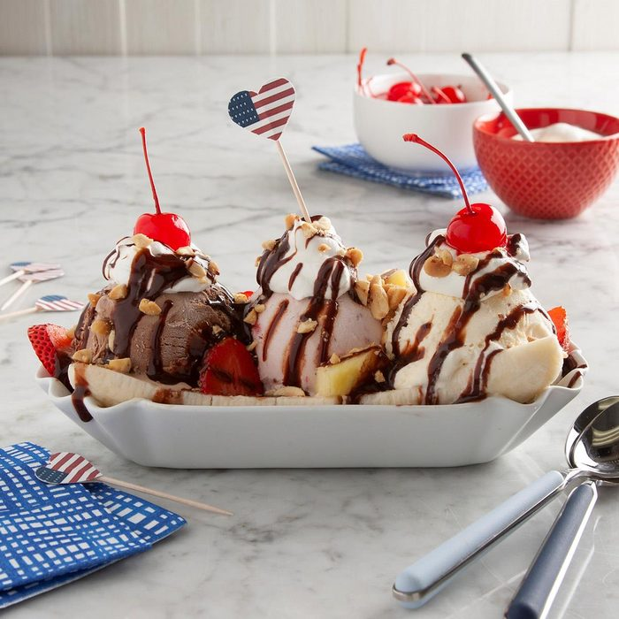

Banana Split

Description
A classic banana split is a combination of vanilla, strawberry,
and chocolate ice cream served with a banana cut lengthwise and toppings like chocolate syrup,
whipped cream, and maraschino cherries.
Ingredients
- 1 banana
- 1 scoop vanilla ice cream
- 1 scoop chocolate ice cream
- 1 scoop strawberry ice cream
- Chocolate syrup, garnish
Instructions
- Gather the ingredients.
- Peel the banana and slice it in half lengthwise. Place the banana slices against the sides of a long, narrow, shallow dish.
- Place the scoops of ice cream in a row between the banana slices.
- Squirt the chocolate syrup on the vanilla and strawberry ice cream.
- Spoon the marshmallow creme over the chocolate ice cream.